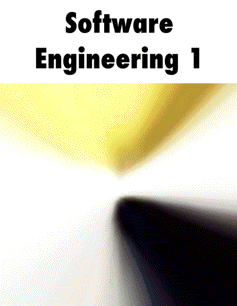

Ahoj
Vítám tě na mé pseudo-stránce!
Tato stránka vzinkla z jednoho prostého důvodu, a to abych byl připuštěn k zápočtovému testu.
Pro vypsání top hráčů bylo použito oficiální osu!api
Tak zase naviděnou, šílenci!
